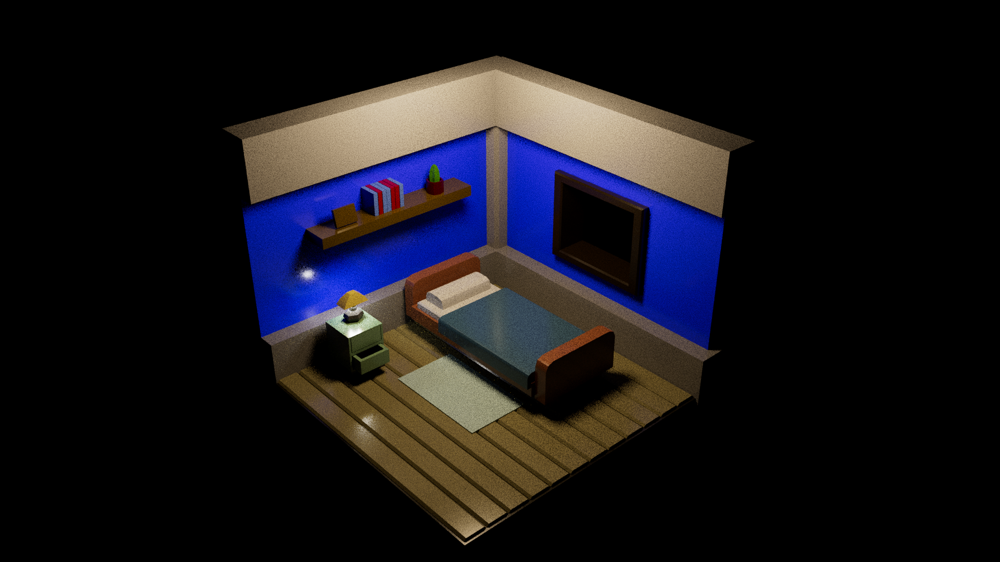
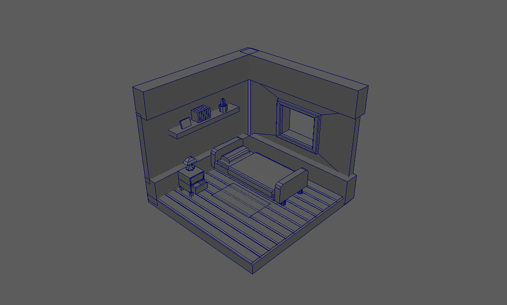
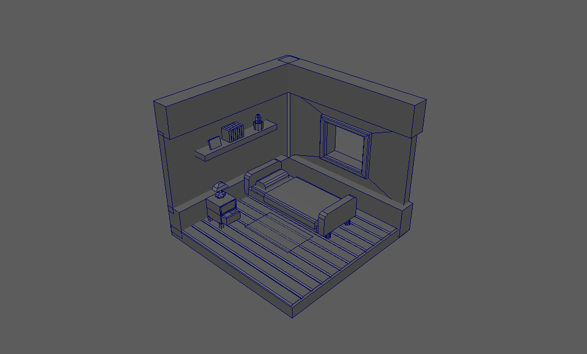

Habitació
Aquesta es la primera part dels projectes d'una tarda, en aquest cas estem fent servir Blender.
Vaig veure un clip a Youtube de com feien aquesta casa com a tutorial i el vaig seguir, aportant una mica més de decoracións.
Vaig fer servir aquest tutorial per a poder-me introduïr a Blender.
 

"Esta passada a maya per a veure els polys."